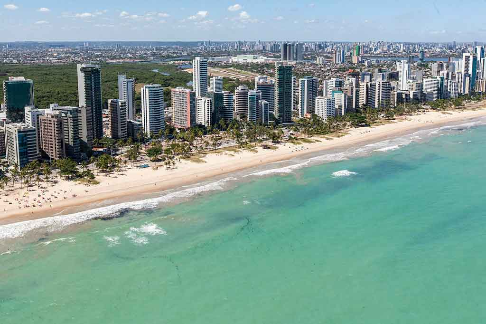

- Praia da Boa Viagem

- Paria de Muro Alto

- Praia do Pina 
Não só a melhor praia urbana de Recife, mas também a mais famosa da cidade, Boa Viagem, é perfeita para quem realmente quer uma boa infraestrutura por perto. Ali está a maior parte dos hotéis de Recife (e os melhores, considerando que se trata de uma área nobre), além de muitos restaurantes e opções para quem quer curtir a vida noturna. A água é própria para banho, desde que você fique na parte rasa e, preferencialmente, aproveite a maré baixa. Em matéria de beleza, Boa Viagem não perde em nada para outras praias. Mas, de fato, tem o fator urbano da orla como contraste.
Essa praia não fica exatamente em Recife: está a uma distância de aproximadamente 50 quilômetros de lá, sendo perfeitamente acessível para quem quer estar relativamente perto da capital, mas num cantinho mais calmo. Mar clarinho, muitas palmeiras servindo de moldura e ausência de ondas fazem da Praia de Muro Alto uma das melhores pedidas para quem viaja com crianças.
E por falar em viajar com crianças, especificamente para a capital pernambucana, temos a Praia do Pina como ótimo atrativo para os pequenos. Localizada a um quilômetro de Boa Viagem, aproximadamente, Pina tem lindas piscinas naturais na maré baixa. Tem, ainda, a comodidade de estar pertinho da zona hoteleira, mas numa localização um pouco mais calma.